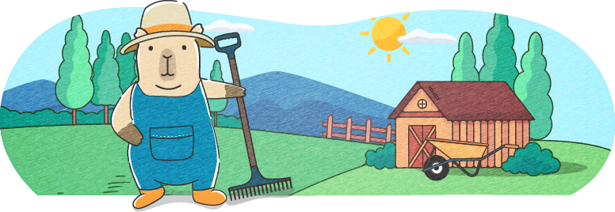

形が悪いものは、ぼくが朝食として食べています。
収穫しながら朝ごはんを済ませられるので、とても効率的なのです！
 形が悪くてぼくが食べたにんじんさんたち
形が悪くてぼくが食べたにんじんさんたち

朝は6時ごろに起きています。いつまでも布団にくるまっていたいけれど、えいや！と頑張って起きます。
外に出て、まずはおひさまに「おはようございます」とご挨拶。
その後、育ったにんじんを収穫します。
形が悪いものは、ぼくが朝食として食べています。
収穫しながら朝ごはんを済ませられるので、とても効率的なのです！
形が悪くてぼくが食べたにんじんさんたち
採ったにんじんを産直店へ運びます。ここが一番の労働かもしれません。
そろそろリヤカーではなく、電気で動く車を買おうかなと思っているところです。
にんじんの様子を見ながら、お水をあげたり、虫を駆除したり、カバーをかけたりします。
今はにんじんがメインですが、将来的にはたくさんの野菜を育てたいので今その準備もしています。
お風呂にゆっくり入った後、眠ります。お布団の中は天国です。